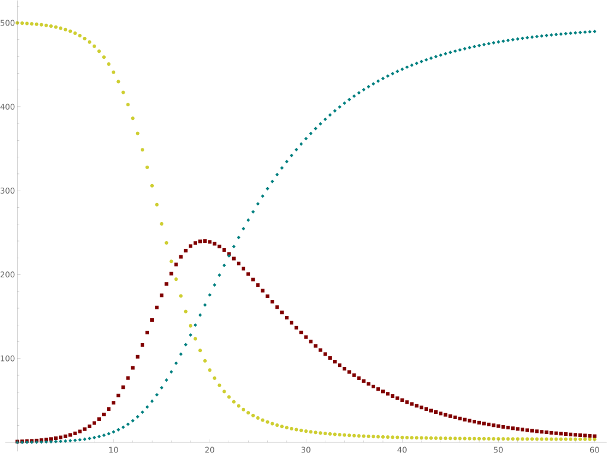

SIR MODEL
Description
Most simple compartmental models and many other models come from this one
The model has 3 compartments:
1)S for number of susceptible,I for infectious and and R for number of recorvered or deceased(can be called resistant or removed)
2)Reasonably predictive for infectous diseases where recovered becomes resistant
3)variables represent no of people in each compartment ar a particular time
4)these 3 variables vary with time..
5)each member of population progressess from susceptible to infected to recovered
Equations without Vital Dynamics
$$ {\displaystyle {\begin{aligned}&{\frac {dS}{dt}}=-{\frac {\beta IS}{N}},\\ {\frac {dI}{dt}}={\frac {\beta IS}{N}}-\gamma I,\\ {\frac {dR}{dt}}=\gamma I,\end{aligned}}} $$
